A GIS project assessing how fairly public amenities are spread across Blacktown, one of western Sydney’s fastest-growing LGAs. We mapped five types of amenity in QGIS and ArcGIS Online, combined them in a hot spot analysis, and compared the results with population density and IRSAD to locate suburbs facing spatial inequity.
📍 Blacktown · Western Sydney
residents (2021 Census)
396,776
Across 238.9 km², with fast growth expected in new release areas.
amenity types
5
Public space, local living, education, transport nodes, and places to stop and rest, each weighted 20%.
hot spot grid
400 m
Hexagon cells scored with buffer and service-area analysis, then tested for hot and cold spots.
suburbs with spatial inequity
4
Richards and Eastern Creek (high); Angus and Shanes Park (moderate).
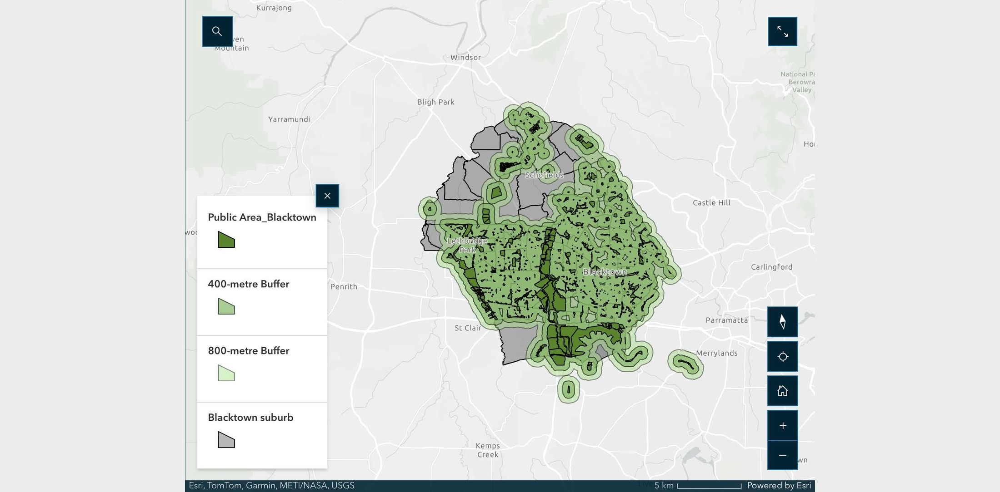
Public space.
400 m and 800 m buffers show which homes are within walking distance of parks and open space.
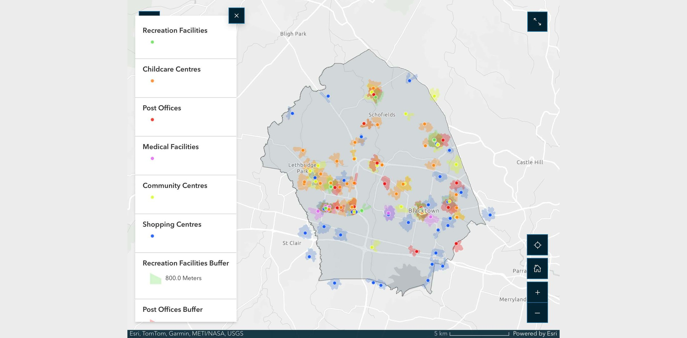
Local living.
Childcare, community, medical, post, recreation and shopping facilities cluster in the main suburbs.
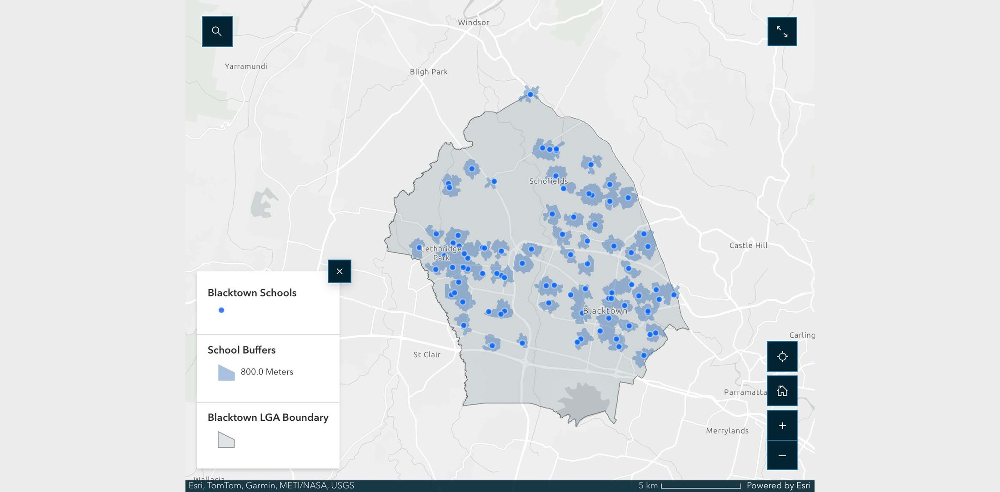
Education facilities.
Eastern Creek, Angus and Shanes Park have limited access within an 800 m walk.
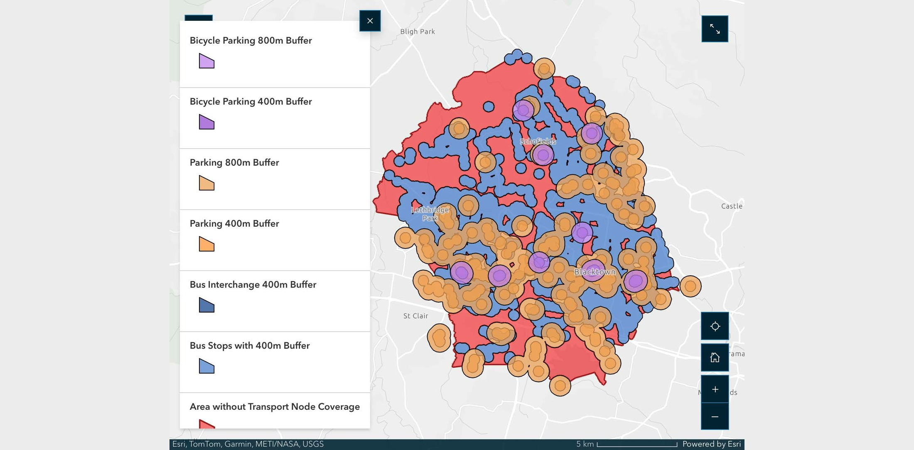
Transport nodes.
Red areas have no bus stop, interchange, car or bicycle parking within walking distance.
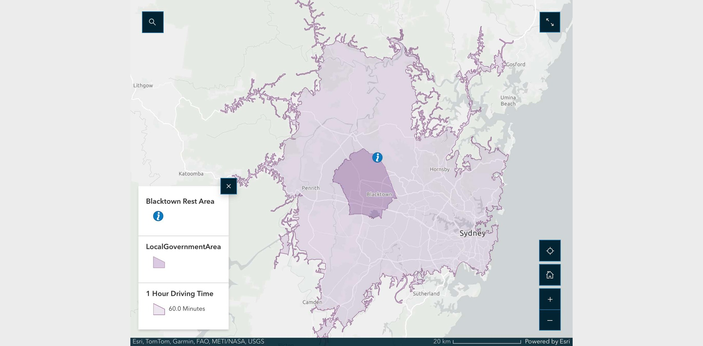
Places to stop and rest.
Blacktown’s only rest area reaches the whole LGA within a 60-minute drive.
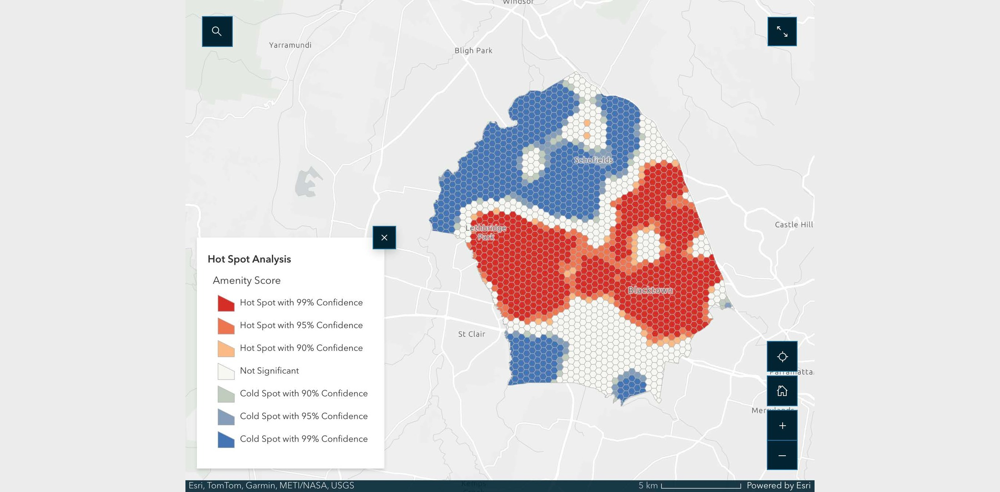
Amenity hot spots.
Cold spots in the north, hot spots in the centre, and no clear pattern in the south.
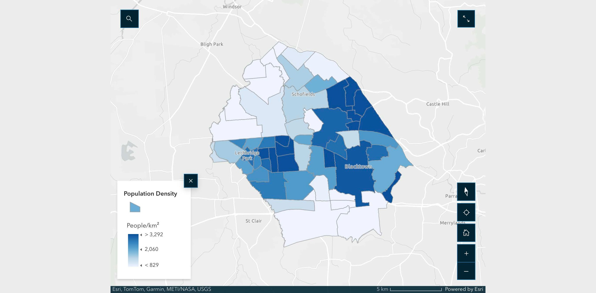
Population density.
Most residents live in the centre at 2,000–3,000 people/km²; the north and south fall below 600.
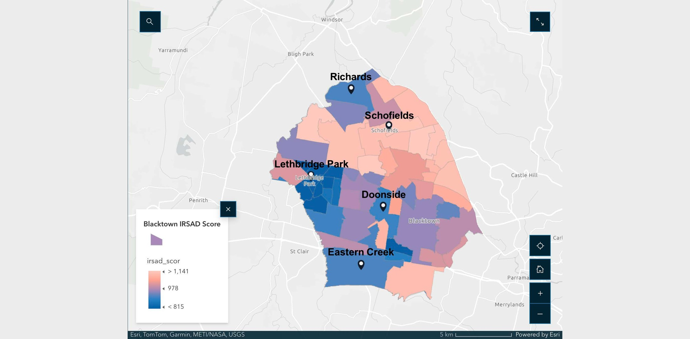
IRSAD score.
Low scores around Lethbridge Park, Doonside, Eastern Creek and Richards; high scores near Schofields.
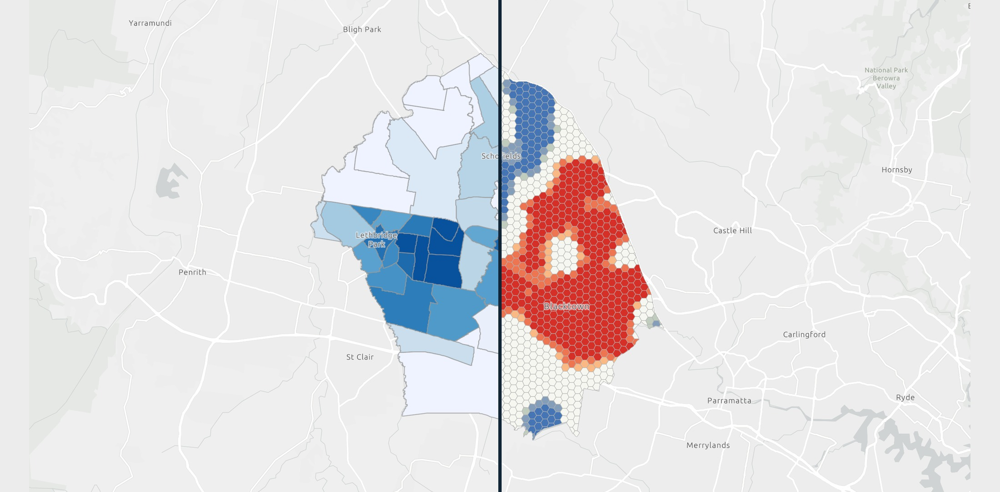
Density vs hot spots.
Denser suburbs are amenity hot spots, while sparser ones are cold spots.
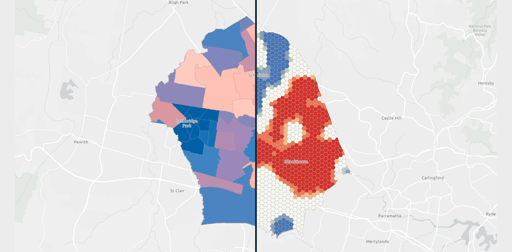
IRSAD vs hot spots.
No clear link: low-IRSAD suburbs appear as both hot and cold spots.
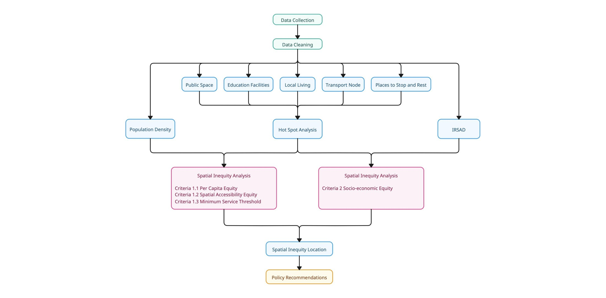
Research method.
Five amenity types feed a hot spot analysis, which is then compared with population density and IRSAD.
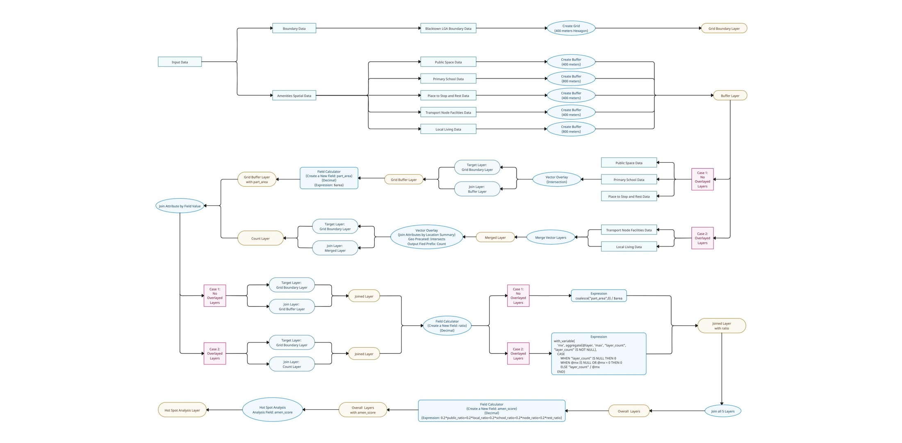
Hot spot workflow.
Each amenity is buffered, joined to a 400 m hexagon grid and scored before the hot spot test.